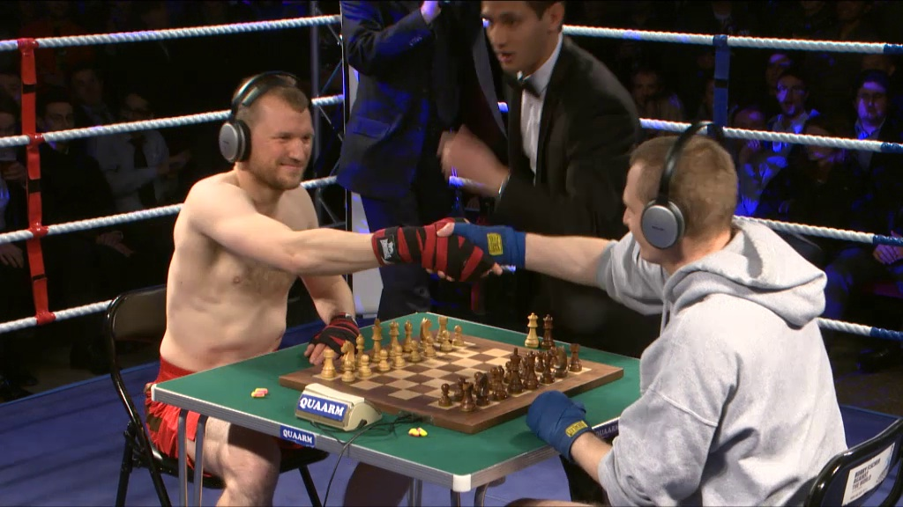

Chess boxing, or chessboxing, is a hybrid fighting sport that combines two traditional sports, chess and boxing. The competitors fight in alternating rounds of chess and boxing.  Chessboxing was invented by Dutch performance artist Iepe Rubingh.[1][2] What was initially only thought to be an art performance quickly turned into a fully developed competitive sport.